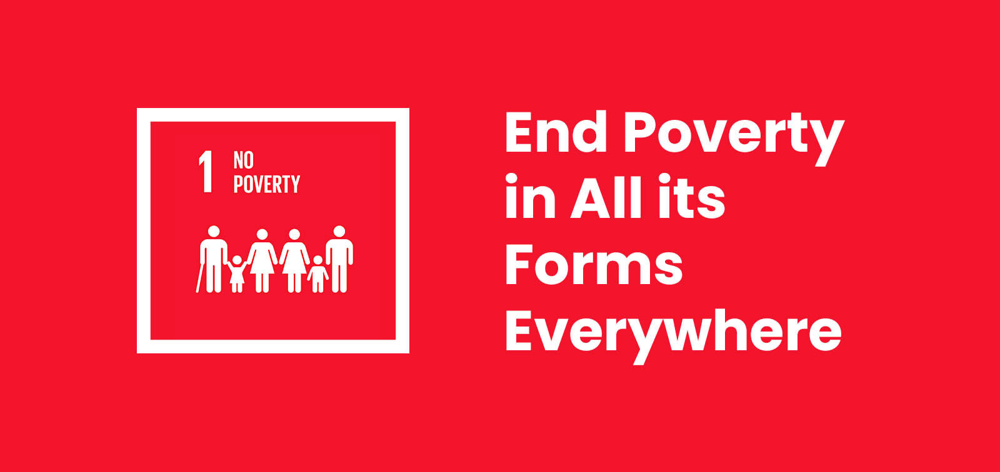

Date --- 6/1/2025
Goal 1 – No Poverty

What is Goal 1?
Goal 1: No Poverty aims to eradicate poverty in all its forms everywhere. It’s not just about income—it’s about access to food, clean water, education, healthcare, and the dignity of opportunity. The goal also emphasizes building strong social protection systems and ensuring equal access to economic resources.
Why is it important for India?
Despite progress, India still faces deep-rooted poverty, especially in rural and marginalized communities. Key challenges include:
- Multidimensional poverty: Beyond income, many lack access to sanitation, education, and safe housing.
- Urban-rural divide: Rural areas often lag behind in infrastructure and services.
- Vulnerable groups: Women, children, and tribal communities are disproportionately affected.
- Climate vulnerability: Droughts, floods, and heatwaves push already fragile communities further into poverty.
Ending poverty in India means unlocking the potential of over a billion people—and building a more just, resilient society.
Role of Computer Science and AI
Technology is a game-changer in the fight against poverty. Here’s how:
- Satellite mapping & geospatial AI: Helps identify poverty hotspots and track development progress.
- Data analytics: Governments and NGOs use big data to design targeted welfare schemes and monitor impact.
- AI-powered chatbots & mobile apps: Provide rural populations with access to government services, healthcare info, and financial tools—even in low-connectivity areas.
- Digital identity systems: Platforms like Aadhaar enable direct benefit transfers, reducing corruption and ensuring aid reaches the right people.
- Predictive modeling: AI can forecast poverty trends and help policymakers act proactively.